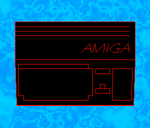

JS mockup in a canvas tag
Final output, cropped to 300px wide

- dual playfield, 3-bitplanes for background plasma, 2-bitplanes for foreground 3d object
- bg is a static plasma image colour cycling, it's a bit ugly I know
- foreground - blitter
- first rendered as a filled polygon first (drawing vertical lines, then filling)
- then draw edges and details next
- it's pre-calced but math is pretty simple, so might be possible to do real-time